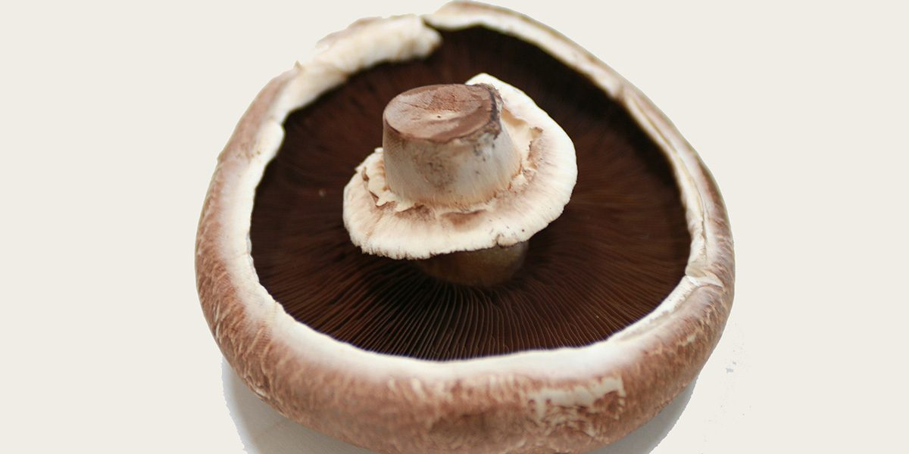

Portobello Facts!
Portobello Facts!

These guys are actually the fully formed final stage of the Button Mushroom life.
They are much larger than Cremini and have more of a meaty texture to them.
They a\have their cap fully open and you can see the gills underneath
They are large enough to be used in a vegetarian meal/burger
they are often baked rather than fried